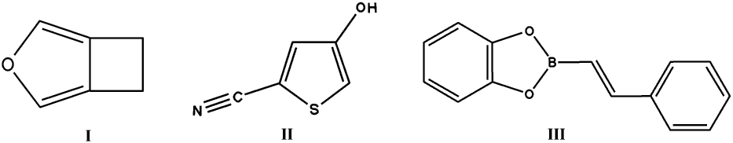

Prof Jack Dumitz discussing close packing with Kate Crennell after the lecture at the BCA Stand in the exhibition area.
(photograph by Steve Maginn )
Pages in this file are :
The 1999 Bragg lecture entitled "Polymorphism: the same but different" was given at the Glasgow IUCr Congress by Professor Jack Dunitz, ETH, Zurich. The Chairman of the Bragg Lecture Fund Committee, Professor Tony North, introduced the lecture by explaining to the sizeable international audience the origin, intent, and practice of the Bragg lecture. (see page 20 'Crystallography News' no. 62 Sept 97). He explained that Prof. Dunitz was a particularly apt choice of Bragg Lecturer for this occasion both because he was born and educated to PhD level in Glasgow and because he had subsequently joined W.L.Bragg's group at the Royal Institution.
Prof Jack Dumitz discussing close packing with Kate Crennell after the
lecture at the BCA Stand in the exhibition area.
(photograph by Steve Maginn )
Prof. Dunitz began his lecture by giving two possible alternative titles:
"Where are we today?" or "How things have changed". He felt these reflected
the change in outlook of chemists to polymorphs during his lifetime, from
the occurrence of an unwanted nuisance to a thriving research field;
mineralogists, however, had always found them interesting. Late in the
eighteenth century Haüy had thought that there was always a one-to-one
correspondence between a compound and a particular crystal structure; in
1822 two different compounds were found to have the same crystalline form,
but it was not until over 100 years later that two different forms were
found for one compound.
Prof. Dunitz suggested that the impetus for this change of attitude came from the challenge of crystal engineering, for example, in the pharmaceuticals industry, and the need to predict crystal structures and molecular properties. Chemists used to be more interested in measuring bond lengths and angles than in the crystal structures. Today they make informed guesses at bond lengths and use "ab initio" quantum mechanical calculations to predict structures, but cannot yet predict why a given molecule takes up one crystalline shape rather than another. He observed that only 3% of the structures in the Cambridge Structural Database (CSD) were explicitly listed as polymorphs but that polymorphism was surely far more common than this. He went on to discuss the nature of polymorphism in the first-order and order-disorder transitions that allow conversion from one polymorph to another. The higher temperature form often has a higher symmetry.
He then related the "Strange Case of the Disappearing Polymorphs" . The
story began in 1946 with the synthesis by Todd in Cambridge, England, of a
crystalline compound, 1,2,3,5- tetra-acetylribose that showed a melting
point of 58C (form A). The same compound with the same melting point was
obtained shortly afterwards in Jena, Germany, but when prepared by a
different method the melting point was 82 C (form B) . Chemists in New York
tried to replicate these results but could only make B, so asked for a
sample of the original crystals of A. However, when the A form reached New
York it had transformed into B, and even more mysteriously, so had the
sample left in peace on the shelf in Cambridge!. Patterson (of the
Patterson function) obtained a sample of A and succeeded in keeping it for 7
weeks before it spontaneously turned into B. Finally in 1981 a laboratory in
Budapest, well away from any contamination of 'B' crystals in England or the
USA, succeeded in synthesising Form A again. This ability for one
thermodynamically stable form to dominate over another polymorph can have
important implications for the pharmaceutical industry, especially when
litigation proceedings are involved. Prof Dunitz also suggested this
phenomenon may well be connected with the prion formation found in scrapie
like diseases such as BSE in cattle.
Prof Dunitz then discussed the lattice energy of crystal polymorphs, where Coulomb forces may be attractive or repulsive, but dispersion forces are always attractive and increase with molecular size. He stated that in many packing arrangements "empty space is wasted space". He had participated in an interesting workshop, (reported on later), where several laboratories had tried to predict a crystal structure given only a structure diagram.
He briefly discussed the packing coefficients of organic crystals, which are in the range 0.65 to 0.8, while that of Kepler's conjecture of closest packing of spheres is 0.74. He ended with his own conjecture "The optimal packing of a collection of identical molecules necessarily leads to the densest packing", that is, both periodicity and the crystalline state. In this context, Kepler's conjecture, (recently shown to be true by a computer proof ) that the densest packing of spheres is the face centred cubic close packing is seen as a special case.
During the question period following the lecture a member of the audience
claimed to know of a counter example to the Dunitz conjecture. He said that
crystalline resorcinol becomes amorphous at high pressures (40-60 kbar)
apparently showing that a non-periodic state can be associated with a higher
density. The lecturer repled that of course, we do not know whether this
amorphous form of resorcinol is the densest form. As a result of hydrogen
bonding, normal resorcinol has an open structure, similar to that of ice,
and one can imagine amorphous or glassy structures, intermediate in density
between the open structure and the densest ones, which may lack hydrogen
bonds. We know that when ice melts and some of the hydrogen bonds are
broken, there is a 10% contraction in volume; one is tempted to ask what
happens at higher pressures, does another crystalline state form with an
even higher density. This lecture had enthralled the audience, many of whom
delayed their coffee break for further discussions.
Pam Thomas, Warwick University
(Secretary Bragg Lecture Fund Committee)
Those who were unable to make it to Glasgow have another chance to hear this
lecture, which is to be repeated on Monday, 1st November 1999 at 5pm
in the Department of Chemistry, Lensfield Road, Cambridge, CB 2 1EW. The
local organiser is Paul Raithby, tel: +44 (0)1223 336323 email:
prr1@cam.ac.uk
Editor's Note:
Prof Dunitz kindly gave me a copy of the reading list he presented
during the lecture; it is reproduced below:
Phase Transformations in Solids,
Editors: R.Smoluchowski, J. E. Mayer, W. A, Weyl, 1951. Wiley.
Especially: Crystallographic aspects of phase transformations, by
M. J. Buerger.
Physics and Chemistry of the Organic Solid State, Eds: David Fox, Mortimer M. Labes, and Arnold Weissberger. Volume 1, 1963; Volume 2, 1965. Interscience.
Especially: Thermodynamics of crystals, by
Edgar F. Westrum, Jr., and John P. McCullough, Volume 1, 1-178.
Polymorphism, by Waiter C. McCrone, Volume 2, 725-767.
Organic Solid State Chemistry, Editor: G. R. Desiraju, 1987.
Elsevier.
Reactivity in Molecular Crystals. Editor. Y.Ohashi, 1993.
VCH.
Phase Changes and Chemical Reactions in Molecular
Crystals. J. D. Dunitz, Acta Cryst., B51, 619-631, 1995.
This collaborative workshop was held at the CCDC, (Cambridge
Crystallographic Data Centre) on a blind test prediction of crystal
structure for 4 organic molecules for which unpublished experimental
structures were available. The purpose of the test was to get a better
insight in the merits and problems of the different existing methodologies
for crystal structure prediction. The 11 participants were invited to
propose at most three structures for each molecule, given only the chemical
diagrams shown here:

These structures were obtained by issuing requests to about 12 laboratories
for smallish molecules with limited flexibility, a common spacegroup and
Z1=1. About 20 chemical diagrams were collected from which 3 were
selected by Dr Paul Raithby ( Chemistry Dept, Cambridge) who agreed to act
as an independent referee. The diagrams were sent out in December 1998; no
experimental details were released by the laboratories until after the
closing date for submission in April 1999. The structure of propane was also
offered as an optional extra challenge.
Although no program gave consistently reliable results, there were
successful predictions for all 4 molecules from different programs, all
based on calculated lattice energy.
7 predictions were very close to the experimental and judged as correct.
The energy based programs were MOLPAK, UPACK, MSI-PP, MPA, plus two related
ab initio based ones. Methods based on fitting against the Cambridge
Database (CSD) statistics were employed in programs FlexCryst, PackStar and
Rancel. These programs covered a wide range of searching techniques as well
as fitness functions.
An interesting story unfolded with compound I, which was revealed to have two polymorphs in Pbca and P21/c, the latter appearing more stable. There were 4 correct predictions of the meta-stable Pbca structure, none of the other. Compound II set more of challenge as regards polar chemical groups and H-bonding, and only one prediction was correct. Compound III had torsional freedom and one correct solution appeared, from a program allowing for flexibility, although the experimental phenyl torsion is only 6 degrees. The structure of propane was only predicted by one program, which turned out to use ab initio derived energy calculations.
The results are encouraging in that the success can not be considered as just a matter of luck, but there is a long way to go before we can place great confidence on the relative stability of calculated structures. Suppose that I in Pbca had not been the experimental accidental finding; no program predicted the P21/c structure which seems the more stable, and the success rate dramatically drops from 7 to 3! The experience has given all the participants food for thought and ideas for improvement of their methods. There was generally an opinion that although energy methods ( ignoring entropy ) are presently the best we have, there will come a time where knowledge based functions derived from the CSD may be useful to select the more likely polymorphs from the surprisingly large numbers of close-packed structures all within a few kJ of the global energy minimum.
A paper is in preparation for Acta Cryst. B
Summary by Jos Lommerse & Sam Mothwell, CCDC
Bursary report from Erice 99
Crystal Engineering: from Molecules and Crystals to Materials,
12th to 23rd May 1999, Erice, Sicily, Italy.
THE LOCATION: If you ever have the opportunity to go to ERICE for a crystallography school, GO! The location is charming and the food arranged so you can try a different restaurant for both lunch and evening meal. This lets you side-track any academic discussion, whilst enabling you too see most of the town in the process.
CONFERENCE SCOPE: This year was the 25th anniversary of the crystallography school, which was celebrated during our stay in ERICE. The conference organisers Dario Braga and Guy Orpen ran a program in 3 parts, computation, synthesis and application.
COMPUTATION: The two major themes were:
SYNTHESIS: Lehn opened the meeting covering supermolecular assemblies and the implication for molecular computation followed by Addadi who covered what can be learnt from bio-mineralisation concerning controlled nucleation and growth. An architecture on which to build crystal engineering was given by Aakeroy, Zaworotko, Hosseini and Kahn, with examples of their current work covering organic, co-ordination polymer, co-crystal or guest-host systems. The central issue was the identification of durable building blocks for use in the design of functional solids where the application dictates the features required.
APPLICATION: The area included the application of crystal engineering strategies to magnetic, optical, superconductors and conduction, and highlighted the issues of how to target the correct building for the structures. In many cases the presentation on application naturally overlapped with those of synthesis. Hulliger and Bosshard discussed polar solids; magnetic materials was covered by Miller and Gatteschi; Geiser gave an overview of conductors.
ONGOING ISSUES:Two themes recurred throughout the meeting. Firstly, how to optimise the engineering of the functional solids by improving the way in which the screening, identification and design of synthon, motif or scaffold of the target structure was done and move away from serendipity. Secondly, the lack of understanding and control over polymorphism was also raised by many during presentations and discussion, particularly the role played by solvent, impurities and crystallisation conditions.
JOURNALS: The launch of a new, purely electronic, Royal Society of Chemistry Journal "Crystal Engineering Communication" was announced and welcomed as a complement to Elsevier's existing 'Journal of Crystal Engineering'.
Nicholas Blagden,
Department of Chemical Engineering, UMIST, PO BOX 88, Manchester M60 1QD
Editor's Note: The journal is to be launched in October 1999; access is
free for 1999.
Look for ISSN 1466 - 8033 at URL
http://www.rsc.org/crystengcomm/
 Click here to return to BCA homepage
Click here to return to BCA homepage